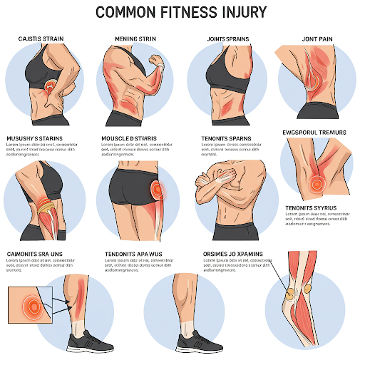

Publicado el 22 de Marzo de 2025
Comenzar una rutina de ejercicios es un paso positivo hacia una vida más saludable. Sin embargo, antes de sumergirte en cualquier programa de fitness, es crucial considerar tu estado de salud actual. Una evaluación médica previa puede proporcionarte información valiosa y ayudarte a evitar riesgos innecesarios.
¿Qué implica una evaluación médica para fitness?
Una evaluación típica puede incluir la revisión de tu historial médico, un examen físico general, la medición de signos vitales como la presión arterial y la frecuencia cardíaca, y posiblemente pruebas específicas según tu edad, condición física y historial médico. Estas pruebas podrían incluir un electrocardiograma (ECG) para evaluar la actividad eléctrica de tu corazón o análisis de sangre para detectar niveles de colesterol o glucosa.
Beneficios clave de la evaluación médica:
- Detección de condiciones preexistentes: Permite identificar problemas de salud que podrían verse afectados por ciertos tipos de ejercicio.
- Identificación de riesgos potenciales: Ayuda a determinar si existen riesgos de lesiones o complicaciones de salud asociadas con la actividad física.
- Desarrollo de un plan personalizado: Facilita la creación de un programa de ejercicios seguro y efectivo, adaptado a tus necesidades y capacidades.
- Establecimiento de una línea base: Proporciona un punto de partida para medir tu progreso y realizar ajustes en tu rutina a lo largo del tiempo.
- Mayor confianza y motivación: Saber que estás ejercitándote de manera segura y bajo la supervisión (indirecta) de un profesional de la salud puede aumentar tu confianza y adherencia al programa.
¿Cuándo es especialmente importante buscar asesoría médica?
Si te encuentras en alguna de las siguientes situaciones, es altamente recomendable que consultes a tu médico antes de comenzar un programa de fitness:
- Tienes una enfermedad cardíaca conocida o sospechada.
- Experimentas dolor en el pecho o dificultad para respirar en reposo o durante el esfuerzo.
- Te mareas o pierdes el conocimiento con facilidad.
- Tienes diabetes, hipertensión arterial, colesterol alto u otras condiciones metabólicas.
- Tienes antecedentes de problemas articulares o musculares.
- Estás embarazada.
- Eres mayor de 40 años y planeas iniciar un programa de ejercicios vigoroso.
- Tienes alguna otra preocupación sobre tu salud y el ejercicio.
¿Qué preguntas hacerle a tu médico?
Durante tu consulta, no dudes en preguntar sobre:
- Qué tipos de ejercicio son seguros y recomendables para ti.
- Si existen actividades que debes evitar.
- Cuáles son las señales de alerta a las que debes prestar atención durante el ejercicio.
- Si necesitas alguna precaución especial o modificación en tu rutina.
En FitConnect, promovemos un enfoque responsable y consciente del fitness. Te animamos a priorizar tu salud y a buscar la orientación médica necesaria para que tu viaje hacia un estilo de vida activo sea exitoso y, sobre todo, seguro.
Publicado el 13 de Febrero de 2025

El ejercicio regular aporta numerosos beneficios, pero también conlleva un riesgo de lesiones si no se practica de forma adecuada. Conocer las lesiones más comunes y las estrategias para prevenirlas es fundamental para mantenerte activo a largo plazo.
Lesiones más frecuentes:
- Esguinces y torceduras: Resultan de movimientos bruscos o sobreestiramientos de ligamentos y músculos. Los tobillos, las rodillas y las muñecas son áreas comunes.
- Tendinitis: Inflamación de los tendones debido a la sobrecarga o movimientos repetitivos. El tendón de Aquiles, el codo (codo de tenista o golfista) y el hombro son susceptibles.
- Dolor lumbar: Puede ser causado por una técnica incorrecta al levantar peso, debilidad muscular o movimientos repetitivos.
- Lesiones de rodilla: Incluyen el síndrome de dolor patelofemoral (rodilla del corredor), lesiones de menisco y ligamentos.
- Distensiones musculares: Desgarros o estiramientos excesivos de las fibras musculares, comunes en los isquiotibiales, cuádriceps y la espalda baja.
Estrategias clave de prevención:
- Calentamiento adecuado: Prepara tus músculos para el ejercicio con 5-10 minutos de actividad ligera y estiramientos dinámicos.
- Técnica correcta: Aprende y practica la forma adecuada para cada ejercicio, especialmente al levantar peso. Considera trabajar con un entrenador al principio.
- Progresión gradual: Aumenta la intensidad, la duración y la frecuencia de tus entrenamientos de forma gradual para permitir que tu cuerpo se adapte.
- Estiramientos: Realiza estiramientos estáticos después del ejercicio para mejorar la flexibilidad y reducir la tensión muscular.
- Descanso y recuperación: Permite que tus músculos se recuperen entre sesiones de entrenamiento. El sobreentrenamiento aumenta el riesgo de lesiones.
- Hidratación y nutrición: Mantenerte bien hidratado y consumir una dieta equilibrada apoya la salud muscular y la recuperación.
- Equipo adecuado: Utiliza calzado y ropa deportiva apropiados para tu actividad.
- Escucha a tu cuerpo: No ignores el dolor. Si sientes molestias, detente y descansa. Consulta a un profesional de la salud si el dolor persiste.
La prevención es la mejor estrategia para evitar lesiones y disfrutar de los beneficios del fitness a largo plazo. En FitConnect, te proporcionaremos guías y recursos para ayudarte a ejercitarte de forma segura y efectiva.
La Importancia del Descanso en la Recuperación Muscular
Publicado el 5 de Abril de 2025
En el mundo del fitness, a menudo se pone un gran énfasis en la intensidad del entrenamiento, la frecuencia y la nutrición. Sin embargo, un componente igualmente vital, aunque a veces subestimado, es el descanso. El descanso no es simplemente un período de inactividad; es un momento crucial en el que tu cuerpo se adapta, se repara y se fortalece en respuesta al estrés del ejercicio.
El Proceso de Recuperación Muscular
Durante el entrenamiento, especialmente el entrenamiento de fuerza, se producen microdesgarros en las fibras musculares. Estos desgarros son una parte necesaria del proceso de construcción muscular. Es durante el descanso cuando el cuerpo comienza a reparar estas fibras, fusionándolas y formando nuevas proteínas musculares, lo que lleva a la hipertrofia (aumento del tamaño muscular) con el tiempo. Sin un descanso adecuado, este proceso de reparación se ve comprometido, lo que puede llevar a un estancamiento en el progreso e incluso al catabolismo muscular (pérdida de masa muscular).
Beneficios Clave del Descanso:
- Reparación y Crecimiento Muscular: Como se mencionó, el descanso permite que los músculos se reparen y crezcan, lo que es fundamental para aumentar la fuerza y la masa muscular.
- Prevención del Sobreentrenamiento: Entrenar sin descanso suficiente puede llevar al sobreentrenamiento, un estado que se manifiesta con fatiga crónica, disminución del rendimiento, aumento del riesgo de lesiones, irritabilidad e incluso problemas de sueño.
- Reducción del Riesgo de Lesiones: Los músculos fatigados son más propensos a las lesiones. El descanso adecuado permite que los músculos recuperen su fuerza y flexibilidad, reduciendo la probabilidad de esguinces, distensiones y otras lesiones relacionadas con el ejercicio.
- Optimización del Rendimiento: Un cuerpo bien descansado está en mejores condiciones para rendir al máximo durante los entrenamientos. La fuerza, la potencia y la resistencia se ven favorecidas por un descanso adecuado.
- Mejora del Estado de Ánimo y la Concentración: El descanso, especialmente el sueño de calidad, juega un papel crucial en la regulación del estado de ánimo, la función cognitiva y la concentración. Estar bien descansado te permitirá afrontar tus entrenamientos y tu día a día con mayor energía y enfoque.
- Regulación Hormonal: El sueño adecuado es esencial para la liberación y regulación de hormonas importantes para el crecimiento muscular y la recuperación, como la hormona del crecimiento y el cortisol. La falta de sueño puede alterar estos equilibrios hormonales.
Tipos de Descanso a Considerar:
- Días de Descanso Completo: Días en los que no se realiza ninguna actividad física intensa. Esto permite una recuperación completa del cuerpo.
- Descanso Activo: Implica realizar actividades de baja intensidad, como caminar ligero, nadar suave o hacer yoga, en los días de descanso. Esto puede ayudar a mejorar el flujo sanguíneo a los músculos y facilitar la eliminación de productos de desecho metabólico sin ejercer un estrés significativo en el cuerpo.
- Sueño de Calidad: Dormir entre 7 y 9 horas por noche es fundamental para la recuperación física y mental. Durante el sueño, el cuerpo realiza muchas de sus funciones de reparación y regeneración más importantes.
- Descanso entre Series: Permitir un tiempo adecuado de descanso entre las series de ejercicios durante el entrenamiento es crucial para mantener la intensidad y la forma correctas.
En conclusión, no veas el descanso como una señal de pereza o falta de dedicación. Intégralo de manera consciente en tu plan de entrenamiento. Escucha a tu cuerpo, reconoce las señales de fatiga y prioriza el descanso para cosechar todos los beneficios de tu arduo trabajo y asegurar un progreso sostenible en tu camino hacia un estilo de vida más saludable y en forma.
Mitos Comunes sobre la Nutrición Deportiva
Publicado el 12 de Abril de 2025
La nutrición juega un papel fundamental en el rendimiento deportivo y la recuperación. Sin embargo, el campo de la nutrición deportiva está plagado de mitos y conceptos erróneos que pueden llevar a los atletas y entusiastas del fitness por caminos equivocados, obstaculizando su progreso e incluso afectando su salud. En este artículo, desmitificaremos algunas de las creencias más comunes, separando la ciencia de la ficción para ayudarte a optimizar tu alimentación y alcanzar tus objetivos de manera efectiva.
Mito 1: Necesitas consumir proteínas inmediatamente después de entrenar (la "ventana anabólica").
Realidad: Si bien la ingesta de proteínas después del ejercicio es importante para la reparación y el crecimiento muscular, la idea de una "ventana anabólica" estrictamente definida de 30-60 minutos es exagerada. La investigación actual sugiere que el cuerpo permanece sensible a la ingesta de proteínas durante varias horas después del entrenamiento. Priorizar la ingesta total de proteínas a lo largo del día (alrededor de 1.6-2.2 gramos por kilogramo de peso corporal para la mayoría de los individuos activos) es más crucial que obsesionarse con el momento exacto post-entrenamiento. Asegúrate de consumir una fuente de proteína de calidad dentro de las 2-3 horas después de tu sesión, pero no te estreses si no es inmediatamente al terminar.
Mito 2: Los carbohidratos son malos y engordan.
Realidad: Los carbohidratos son la principal fuente de energía para el cuerpo, especialmente durante el ejercicio de alta intensidad y larga duración. Eliminarlos por completo de la dieta puede llevar a fatiga, disminución del rendimiento y dificultades en la recuperación. Elegir fuentes de carbohidratos complejos y no procesados, como granos integrales, frutas y verduras, es fundamental para mantener niveles de energía estables y reponer las reservas de glucógeno muscular. El aumento de peso está más relacionado con un exceso calórico total que con un macronutriente específico. Aprende a equilibrar tu ingesta de carbohidratos según tu nivel de actividad y objetivos.
Mito 3: Más proteína siempre es mejor para construir músculo.
Realidad: Si bien la proteína es esencial para la construcción muscular, consumir cantidades excesivas no necesariamente conduce a un mayor crecimiento. El cuerpo solo puede utilizar una cierta cantidad de proteína para la síntesis muscular; el exceso se descompone y se utiliza como energía o se almacena como grasa. Para la mayoría de las personas activas, una ingesta de 1.6-2.2 gramos de proteína por kilogramo de peso corporal al día es suficiente. Concentrarse en la calidad de las fuentes de proteína y en un entrenamiento de resistencia adecuado es más importante que simplemente consumir grandes cantidades.
Mito 4: Los suplementos son necesarios para obtener resultados significativos.
Realidad: Una dieta equilibrada y bien planificada, junto con un programa de entrenamiento constante, son la base para lograr resultados en el fitness. Si bien algunos suplementos pueden ofrecer beneficios marginales en ciertas situaciones (por ejemplo, creatina para fuerza y potencia, proteína en polvo para alcanzar los requerimientos), no son imprescindibles para la mayoría de las personas. Muchos suplementos carecen de evidencia científica sólida o están mal regulados. Prioriza una alimentación saludable y considera los suplementos solo después de haber optimizado tu dieta y entrenamiento, y siempre bajo la guía de un profesional de la salud o un dietista registrado.
Mito 5: Debes evitar las grasas por completo si quieres perder peso.
Realidad: Las grasas son un macronutriente esencial que desempeña roles importantes en la producción de hormonas, la absorción de vitaminas y la salud celular en general. Si bien es importante controlar la ingesta total de calorías para perder peso, eliminar las grasas por completo puede ser perjudicial. Prioriza las grasas saludables, como las que se encuentran en aguacates, frutos secos, semillas, aceite de oliva y pescado graso (ricos en omega-3), y limita las grasas saturadas y trans. Las grasas saludables pueden ayudar a sentirte saciado, lo que puede ser beneficioso para el control del peso.
Mito 6: Los alimentos "detox" son necesarios para eliminar toxinas del cuerpo.
Realidad: El cuerpo humano tiene sus propios sistemas de desintoxicación altamente eficientes: el hígado y los riñones. Estos órganos trabajan constantemente para filtrar y eliminar los productos de desecho y las toxinas. No hay evidencia científica sólida que respalde la necesidad de dietas o alimentos "detox" especiales para este proceso. Mantener una dieta equilibrada rica en frutas, verduras, fibra y agua es la mejor manera de apoyar la función natural de desintoxicación de tu cuerpo.
En resumen, la nutrición deportiva puede ser compleja, pero basarse en principios científicos sólidos y evitar caer en mitos populares es clave para optimizar tu rendimiento, recuperación y salud en general. Prioriza una dieta equilibrada, escucha a tu cuerpo y busca la guía de profesionales cualificados para obtener asesoramiento nutricional personalizado.
Beneficios del Entrenamiento de Fuerza para la Salud General
Publicado el 19 de Abril de 2025
Más allá de construir músculo, el entrenamiento de fuerza ofrece una amplia gama de beneficios para la salud general. Desde mejorar la densidad ósea y prevenir la osteoporosis hasta aumentar el metabolismo y mejorar la función cardiovascular, incorporar ejercicios de resistencia en tu rutina puede tener un impacto significativo en tu bienestar a largo plazo. Este tipo de entrenamiento también juega un papel crucial en la mejora de la postura, la reducción del dolor de espalda y el aumento de la capacidad funcional para las actividades diarias.
Descubre cómo el entrenamiento de fuerza puede transformar tu salud y tu calidad de vida.